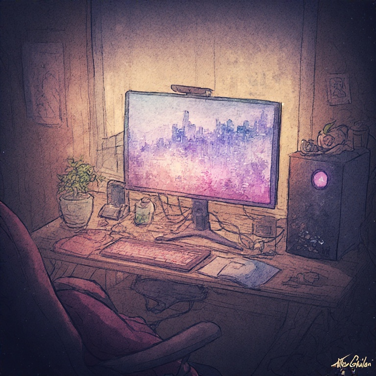

Featured Projects

TashBoard
Workflow management system developed in Python for a local accounting business. Automated client tracking, document management, and tax workflow processes to improve administrative efficiency.

BHARA QR Trivia Game
Serverless educational web application created for Black Hill Primary School. Built with HTML, CSS, and JavaScript and designed around stakeholder requirements with QR-based interactive gameplay.

Password Quality Checker
Interactive password analysis tool demonstrating password strength concepts and secure password practices through real-time feedback and validation.

3D Printer Monitoring Server
Local web-based monitoring server for tracking and managing 3D printers through network communication. Provides real-time printer status, information retrieval, and hardware monitoring without relying on external cloud services.